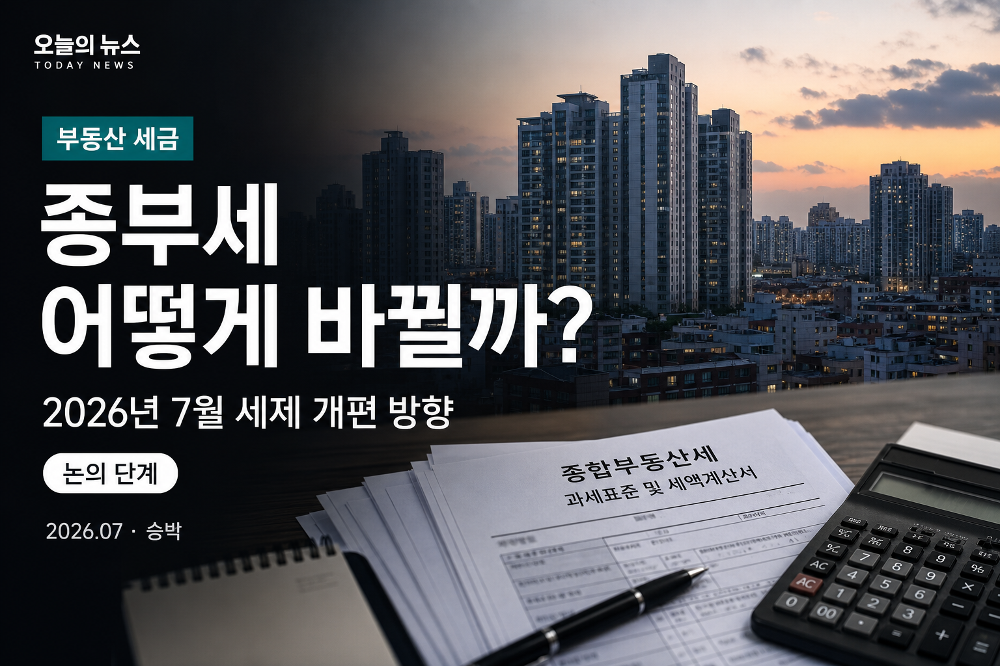

종부세 어떻게 바뀔까? 2026년 7월 세제 개편 방향 총정리
확정된 법이 아니라, 지금 논의·발표 예정 단계의 방향을 정리합니다

2026년 7월, 부동산 세제를 둘러싼 이야기가 다시 커지고 있습니다. 다만 지금 단계에서 중요한 점은 하나입니다. 아직 확정된 법이 아니라, 논의·발표 예정 단계라는 점입니다. 이 글은 “확정됐습니다”가 아니라, 지금 알려진 방향과 숫자·시나리오를 월급쟁이 눈높이로 정리한 안내문입니다.
먼저 읽어주세요
정부가 부동산 세제를 7월 중 정리하겠다고 밝힌 것으로 알려졌습니다. 세부안은 발표 시점에 따라 달라질 수 있고, 국회 심의 과정에서 내용이 바뀔 수 있습니다. 아래 숫자는 현재 공개·보도된 집계와 논의 시나리오를 바탕으로 합니다.
- 종부세 과세 기준이 주택 수 → 주택 가격(가액)으로 바뀔 수 있는지 정리합니다.
- 2026년 공시가격 반영으로 1주택자 종부세 대상이 늘어난 집계를 도표로 봅니다.
- 공정시장가액비율·장기보유특별공제 등 논의 중인 시나리오를 함께 짚습니다.
지금 무슨 일이 벌어지고 있나
정부는 부동산 세제 전반을 손질하겠다는 뜻을 밝히며, 세부안을 7월 중 정리하겠다는 메시지를 내놓은 것으로 알려졌습니다. 7월 중순에는 재정경제부 주관으로 전문가·시장 의견이 오가는 토론회도 열렸고, 종부세·양도세·보유세 부담을 어떻게 재설계할지에 대한 논의가 이어지고 있습니다.
핵심 키워드는 크게 세 갈래로 정리할 수 있습니다. 첫째, 종부세를 주택 수 기준이 아니라 주택 가격(가액) 기준으로 보는 방향입니다. 둘째, 공시가격이 오른 해에 1주택자 종부세 대상 가구가 늘어난 현실을 어떻게 볼지입니다. 셋째, 공정시장가액비율 조정과 장기보유특별공제의 실거주 중심 재편이 함께 거론된다는 점입니다.
다만 이 세 가지가 모두 한 번에, 지금 형태로 확정된다는 뜻은 아닙니다. 발표 시점·세부 기준금액·세율·공제율에 따라 체감 부담은 크게 달라질 수 있습니다. 그래서 지금은 “내 세금이 얼마로 확정된다”보다, 어떤 축이 움직일 수 있는지를 먼저 이해하는 편이 안전합니다.
기본 개념이 궁금하다면 먼저 종부세 기본 가이드를, 공정시장가액비율 시나리오가 궁금하다면 60%→80% 시나리오 정리를 함께 보면 흐름이 이어집니다. 이 글은 그 위에, 2026년 7월 현재의 개편 논의 지형을 얹어 보는 글입니다.
언론 보도를 보면 “7월 중 정리”라는 표현이 반복됩니다. 여기서 정리란 방향 발표를 의미할 수도 있고, 세부안 패키지를 의미할 수도 있습니다. 어느 쪽이든 중요한 건, 지금 시점에 법령 조문이 확정됐다고 보기 어렵다는 점입니다. 토론회에서 나온 전문가 의견과 정부 메시지가 섞여 전달되는 구간이라, 헤드라인만 보고 확정으로 받아들이면 오해가 생기기 쉽습니다.
특히 월급쟁이 독자 입장에서는 “내 집 세금이 당장 얼마나 오른다”는 문장에 민감해지기 쉽습니다. 그런데 같은 뉴스라도 기준금액·공제·세율·시행 시기가 빠지면 체감이 완전히 달라집니다. 그래서 이 글은 숫자를 다루되, 매번 집계·논의·시나리오 중 어디에 해당하는지 표시하려고 합니다. 확정 고지서가 나오기 전까지는, 뉴스의 숫자를 “내 납부액”으로 바로 옮기지 않는 편이 안전합니다.
종부세, 무엇이 바뀔 수 있나
가장 많이 언급되는 방향은 종부세 과세 기준을 “몇 채인가”에서 “얼마짜리인가”로 바꾸는 논의입니다. 지금은 주택 수에 따라 공제·세율 적용이 달라지는 구조가 강하고, 그 결과 “공시가 합이 비슷해도 1주택과 다주택의 부담 차이”가 크다는 지적이 이어져 왔습니다.
가격(가액) 기준으로 전환되면, 초고가 1주택과 합산 가액이 큰 다주택을 더 비슷한 잣대로 보려는 취지로 해석되는 경우가 많습니다. 이른바 “똘똘한 한 채” 쏠림을 완화하려는 문제의식과도 연결돼 논의되고 있습니다. 다만 어느 금액부터 초고가로 볼지, 세율·공제를 어떻게 재설계할지는 아직 세부안이 발표되어야 윤곽이 잡힙니다.
| 구분 | 기존(현행 중심) | 논의 중 방향 |
|---|---|---|
| 과세 기준 | 주택 수 영향이 큰 구조 | 주택 가격(가액) 중심으로 전환 논의 |
| 초고가 1주택 | 1주택 공제·세액공제 등 적용 | 가액 기준으로 부담 재설계 가능성 |
| 다주택 | 주택 수·지역에 따른 차등 | 합산 가액 중심 재편 가능성 |
| 확정 여부 | 2026년 7월 현재 논의·발표 예정 단계 (확정 아님) | |
이와 함께 장기보유특별공제(장특공제)를 실거주 중심으로 재편하는 이야기도 거론되고 있습니다. 보유 기간만으로 공제 혜택이 커지는 구조가, 비거주 “한 채”에 유리하게 작동할 수 있다는 문제의식이 배경으로 알려져 있습니다. 확정 시 거주 요건·보유 요건의 조합이 달라질 수 있으므로, 양도 계획이 있는 분들은 발표안을 특히 주의해서 볼 필요가 있습니다.
정리하면, 지금 단계에서 말할 수 있는 것은 “종부세가 이렇게 확정됐다”가 아니라 “과세의 중심축을 주택 수에서 가액으로 옮기려는 논의가 진행 중”이라는 점입니다. 최종안이 나오면 기준금액·세율·공제·상한이 한 세트로 맞춰질 가능성이 큽니다.
가격 기준 전환이 논의되는 이유를 한 문장으로 압축하면, “같은 자산 규모인데 주택 수 때문에 세금 차이가 너무 크다”는 문제의식입니다. 공시가 10억짜리 한 채와, 합쳐 10억인 두 채의 부담이 크게 갈라질 수 있다는 사례가 토론회·보도에서 자주 인용되는 것으로 알려져 있습니다. 가액 기준으로 가면 이런 격차를 줄이려는 취지로 읽히는 경우가 많습니다.
다만 가액 기준이 “누구에게나 세금이 오른다”는 뜻은 아닙니다. 초고가 구간을 어떻게 나누느냐, 기본공제를 어떻게 재설계하느냐에 따라 부담이 늘어나는 구간과 상대적으로 완화되는 구간이 갈릴 수 있습니다. 확정 시 발표되는 기준표를 보기 전에는, 내 집을 어느 칸에 넣을지 단정하기 어렵습니다.
장기보유특별공제 재편 논의도 같은 맥락으로 볼 수 있습니다. 보유 기간만으로 공제 혜택이 커지면, 실거주하지 않는 “한 채”에도 유리하게 작동할 수 있다는 지적이 나옵니다. 실거주 중심으로 바꾸면 양도 시점의 세금 계산이 달라질 수 있으므로, 매도 계획이 있는 분들은 발표안의 거주·보유 요건을 특히 유심히 볼 필요가 있습니다. 이 역시 확정안이 나오기 전에는 가정에 불과합니다.
왜 올해 부담이 커지나
개편안과 별개로, 2026년에는 이미 공시가격 상승이 보유세 체감을 키운 해로 알려져 있습니다. 국토교통부가 공개한 공동주택 공시가격 관련 집계를 보면, 1세대 1주택자 기준 종부세 대상(공시가격 12억원 초과)이 전년 약 31.8만 가구에서 약 48.7만 가구로 늘었고, 증가율은 약 53.5%로 집계된 것으로 보도되었습니다.
이 숫자는 “세율이 올랐다”기보다, 공시가격이 오르면서 12억 선을 넘는 집이 늘었다는 쪽에 가깝습니다. 현실화율이 동결되더라도 시세 상승분이 공시가에 반영되면 대상 가구가 늘어날 수 있다는 설명이 함께 나왔습니다. 즉, 개편이 아직 확정되지 않은 상태에서도 이미 “대상이 넓어진 해”라는 인식이 강해진 셈입니다.
월급쟁이 입장에서 이 숫자가 의미하는 바는 단순합니다. “나는 1주택이니까 괜찮다”는 문장만으로는 안심하기 어려워졌고, 공시가 12억 근처·초과 구간에 있는 실거주자도 대상에 포함될 수 있다는 점입니다. 여기에 공정시장가액비율 조정 시나리오가 겹치면, 같은 공시가라도 과세표준이 더 커질 수 있다는 논의가 이어집니다.
지역별로 보면 공시가 상승 폭이 달랐다는 보도도 함께 나왔습니다. 전국 평균과 서울·수도권의 체감이 다를 수 있고, 같은 1주택이라도 단지·면적·연식에 따라 12억 선을 넘는 시점이 달라집니다. “우리 동네는 아직”이라고 느껴도, 내년 공시가 재산정 때 다시 점검할 여지가 있습니다.
또한 대상 가구 증가는 곧 “고지서를 받는 사람”이 늘어날 수 있다는 신호로 읽히지만, 실제 납부세액은 공제·세율·세액공제·상한에 따라 천차만별입니다. 대상이 됐다고 해서 모두 같은 금액을 내는 구조가 아닙니다. 그래서 도표 A의 숫자는 대상 확대의 규모를 보는 지표로 쓰고, 내 예상 세액은 별도 시뮬레이션이 필요합니다.
개편안이 발표되면 대상 확대와 비율·세율 조정이 겹칠 가능성도 거론됩니다. 겹친다면 체감 부담이 더 커질 수 있다는 전망이 나오지만, 반대로 공제나 상한이 함께 손질되면 상쇄되는 부분도 생길 수 있습니다. “올해는 공시가, 하반기는 제도”처럼 두 축을 나눠 보는 이유가 여기에 있습니다.
공정시장가액비율이 뭐길래
공정시장가액비율은 공시가격에 곱해 종부세 과세표준을 만드는 비율입니다. 공시가가 올라도 이 비율이 낮으면 과세표준 증가 폭이 완화되고, 비율이 오르면 같은 공시가라도 과세표준이 커질 수 있습니다. 계산의 뼈대는 대략 다음과 같습니다.
과세표준 ≈ (공시가격 합계 − 기본공제) × 공정시장가액비율
예시로 공시가 15억 1주택·공제 12억·비율 60%라면 (15억−12억)×60% = 1.8억이 과세표준이 됩니다.
비율이 80%로 가정되면 같은 조건에서 2.4억이 됩니다. 이는 가정 예시이며 확정 세액이 아닙니다.
2026년 하반기 논의에서는 공정시장가액비율을 현행 60%대에서 80% 수준으로 올리는 시나리오가 거론되는 것으로 알려졌습니다. 전문가 토론에서도 “재산세와 종부세 비율을 나눠 올리자”는 의견이 나오는 등, 인상 폭·속도를 둘러싼 시각차는 남아 있습니다. 자세한 시나리오 숫자는 공정시장가액비율 시나리오 글에서 더 길게 풀어 두었습니다.
| 항목 | 60% (현행 중심) | 80% (거론 시나리오) |
|---|---|---|
| 역할 | 공시가 → 과세표준 환산 | 같은 공시가라도 과세표준↑ 가능 |
| 체감 | 상대적으로 완화된 환산 | 보유세 부담 확대 시나리오 거론 |
| 예시(개념) | (공시−공제)×60% | (공시−공제)×80% |
| 상태 | 논의·전망 — 확정 비율·시행 시기는 발표·입법에 따름 | |
비율만 오른다고 모든 사람의 세금이 같은 비율로 오르는 것도 아닙니다. 기본공제, 세율 구간, 세액공제, 세부담상한이 함께 움직이면 결과가 달라집니다. 그래서 “80%면 무조건 두 배”처럼 단정하기보다, 홈택스 미리보기·세무사 상담으로 내 주택 조건에 맞는 시뮬레이션을 보는 편이 현실적입니다.
비율 논의가 민감한 이유는, 공시가가 이미 오른 해에 비율까지 오르면 과세표준이 이중으로 커질 수 있다는 우려 때문입니다. 반대로 비율만 올리고 공제·세율을 완화하면 체감이 달라질 수 있습니다. 정부는 공시가·공제·비율·세율·상한을 “조합”해 목표 부담을 맞추려 한다는 취지의 설명이 보도를 통해 전해지기도 했습니다. 확정 조합표가 나오기 전엔 단편 뉴스만으로 결론내기 어렵습니다.
재산세와 종부세의 공정시장가액비율을 다르게 가져가자는 의견도 거론됩니다. 예를 들어 재산세는 상대적으로 낮게, 종부세는 80% 전후로 맞추자는 식의 의견이 전문가 토론에서 나왔다는 보도가 있습니다. 이는 “보유세 전체를 한꺼번에 올리는 것”과 “종부세 중심의 조정”을 구분하려는 시도로 읽히기도 합니다. 최종안에서 어떤 조합이 채택될지는 아직 열린 문제입니다.
실무적으로는 홈택스의 미리보기·모의계산 기능을 활용하되, 모의계산에 아직 반영되지 않은 개편안이 있다면 결과가 달라질 수 있습니다. 발표 직후에는 시뮬레이션 조건이 업데이트되기까지 시차가 있을 수 있으니, 공식 안내와 세무사 확인을 함께 받는 편이 좋습니다.
1주택자·다주택자는 어떻게 봐야 할까
1주택 실거주자라면, 지금은 두 겹의 시선을 두는 게 좋아 보입니다. 하나는 이미 반영된 공시가 상승으로 대상 가구가 늘어난 점이고, 다른 하나는 앞으로 나올 개편안에서 가액 기준·비율·공제가 어떻게 조합될지입니다. 실거주 중인 한 채라도 공시가가 높으면 논의의 영향권에 들어갈 수 있다고 보는 편이 안전합니다.
다주택자라면 주택 수 중과 구조가 약해지고 가액 합산이 강해질 경우, 지금과 다른 부담 구조가 될 수 있다는 전망이 나옵니다. 반대로 초고가 1주택 쪽이 상대적으로 더 부각될 수도 있어, “다주택이라서 무조건 더 불리/유리”로 단정하기 어렵습니다. 합산 가액·지역·대출·양도 계획을 함께 봐야 합니다.
지금 당장 해둘 수 있는 점검
중요한 건, 이 글의 어떤 문장도 매수·매도·보유를 권하는 투자 조언이 아니라는 점입니다. 세금은 개인 상황·법령·고지 내용에 따라 달라지고, 논의 단계의 뉴스만으로 큰 결정을 내리면 리스크가 큽니다. “방향은 알고, 확정은 기다리고, 숫자는 검증한다”가 월급쟁이에게 현실적인 순서라고 봅니다.
대출이 있는 실수요자라면, 세금 논의와 별도로 원리금 상환·생활비 여력을 함께 봐야 합니다. 보유세가 늘어날 수 있다는 전망만으로 급매를 결정하면, 거래비용·양도세·이사 비용까지 한꺼번에 발생할 수 있습니다. 반대로 “나중에 보면 되지”로 미루면, 고지 시점에 현금 유동성이 부족해질 수도 있습니다. 여유 자금 점검과 일정 여유를 두는 정도가, 논의 단계에서 할 수 있는 현실적인 준비입니다.
투자 목적의 다주택·비거주 주택을 가진 경우라면, 가액 기준·장특공제 재편이 확정될 때 손익 계산이 달라질 수 있습니다. 다만 이 글에서 매도·보유·추가 매수를 권하지는 않습니다. 각자의 취득가·보유기간·거주여부·대출 조건이 달라 일반론으로 결론을 내기 어렵기 때문입니다.
부부 공동명의·세대 분리·증여 같은 구조 변경도 세무·법률 이슈가 큽니다. 개편 뉴스만 보고 구조를 바꾸면, 의도치 않은 취득세·양도세·건강보험료 이슈가 생길 수 있습니다. 필요하면 세무사·변호사와 먼저 상담하고, 확정안 문구를 기준으로 판단하는 편이 안전합니다.
정리하며
2026년 7월 현재, 부동산 세제는 “이미 끝난 개편”이 아니라 정리·발표를 앞둔 논의에 가깝습니다. 종부세는 주택 수에서 가격(가액) 기준으로의 전환이 논의되고 있고, 공시가 상승으로 1주택자 대상 가구는 이미 크게 늘어난 집계가 나와 있으며, 공정시장가액비율·장특공제 재편 시나리오가 겹쳐 거론되고 있습니다.
세부안이 나오면 기준금액과 세율·공제가 한 번에 윤곽을 드러낼 가능성이 큽니다. 그때까지는 단정적인 헤드라인보다, 내 공시가·내 주택 수·내 거주 여부를 기준으로 시나리오를 나눠 보는 편이 덜 흔들립니다. 확정 법령과 고지서가 나오기 전에는, 이 글의 숫자도 “현재 시점의 정리”로만 읽어 주세요.
※ 본문의 숫자·항목은 발행 전 최신 뉴스·공식 발표를 재확인할 필요가 있습니다.
마지막으로, 정보를 고르는 기준도 짧게 남겨둡니다. “확정” “시행” “고시” 같은 단어가 없는 기사는 논의·전망으로 읽고, 정부 보도자료·법안 원문이 나오면 그쪽으로 업데이트하는 습관이 도움이 됩니다. 블로그 글 역시 시점 문서이므로, 발표 이후에는 날짜와 함께 다시 확인하는 것이 좋습니다.
승박 사이트에서는 세금 시리즈로 종부세 기본과 공정시장가액비율 시나리오를 먼저 정리해 두었습니다. 개편 발표가 나오면, 같은 틀로 무엇이 바뀌었는지를 비교해 보는 방식으로 후속 글을 이어갈 수 있습니다. 지금은 “방향 지도”를 손에 쥐는 단계로 보시면 됩니다.
숫자만 보면 불안해지기 쉽지만, 제도 개편의 목적은 보도마다 조금씩 다르게 설명됩니다. 조세 형평, 초고가 주택 과세, 실거주 보호, 거래 활성화 등 여러 목표가 한 패키지에 섞일 수 있습니다. 목표가 여럿이면 최종안도 절충안이 될 가능성이 큽니다. 그래서 지금은 극단 시나리오 하나만 외우기보다, 범위를 잡아 두는 편이 덜 흔들립니다.
또한 지방세인 재산세와 국세인 종부세가 함께 움직이는 구조라는 점도 기억할 만합니다. 뉴스 제목에 “보유세”라고만 나오면 재산세·종부세가 섞여 전달되는 경우가 있습니다. 내 고지서를 볼 때는 어떤 세금 항목이 오른 건지 구분해 보는 습관이 도움이 됩니다. 논의 단계의 기사도 가능하면 항목을 나눠 메모해 두면, 발표 후 비교가 수월합니다.
결국 이 글의 목적은 불안을 키우는 것이 아니라, 발표 전에 지도를 펼쳐 두는 것입니다. 확정안이 나오면 기준금액과 세율표부터 대조하고, 그다음에 내 공시가·거주 여부를 대입해 보세요. 그 순서가 지켜지면, 헤드라인에 휘둘릴 확률을 조금은 줄일 수 있습니다. 발표 전후 체크리스트를 메모장에 남겨 두면, 나중에 비교하기도 한결 수월합니다. 무엇보다 확정 법령과 고지서 숫자가 최종 기준이라는 점을 잊지 마세요. 그 전까지의 모든 숫자는 참고용 시나리오로만 다루면 충분합니다. 과장된 단정은 피하겠습니다. 차분히 읽기 바랍니다.
FAQ
Q1. 지금 당장 종부세가 확정적으로 바뀌나요?
아닙니다. 2026년 7월 현재는 논의·발표 예정 단계로 알려져 있습니다. 세부안 발표와 입법·시행 일정에 따라 달라질 수 있습니다.
Q2. 주택 수 기준이 완전히 사라지나요?
“가격(가액) 중심으로 전환”이 논의되고 있다고 보는 편이 맞습니다. 최종안에서 주택 수 요소가 어떤 형태로 남는지 등은 발표를 봐야 합니다.
Q3. 1주택 실거주자도 영향받을 수 있나요?
가능합니다. 이미 공시가 상승으로 대상 가구가 늘어난 집계가 나와 있고, 가액 기준·비율 조정이 확정되면 고가 1주택 부담이 재설계될 수 있다는 전망이 있습니다.
Q4. 공정시장가액비율 80%가 확정인가요?
확정으로 단정할 수 없습니다. 거론·논의되는 시나리오 중 하나로 알려져 있습니다. 중간안이 나오거나 시행 시기가 조정될 수도 있습니다.
Q5. 도표의 31.8만·48.7만은 확정 납부 인원인가요?
공개·보도된 집계(공시가 12억 초과 1세대 1주택 기준)를 바탕으로 한 숫자입니다. 실제 고지·납부 인원과 차이가 날 수 있으며, 집계 기준·시점에 따라 표현이 달라질 수 있습니다.
Q6. 지금 집을 팔거나 사야 할까요?
이 글은 투자 권유가 아닙니다. 세금 논의만으로 매매를 결정하기보다, 확정안·본인 자금·거주 필요를 종합해 전문가와 상담하는 편이 안전합니다.
📎 출처·참고
- 국토교통부 공동주택 공시가격 관련 공개·보도 (1주택 종부세 대상 가구 집계)
- 재정경제부 등 부동산 세제 개편 관련 보도·토론회 논의 (2026년 7월)
- 국세청 · 홈택스
- 종부세 기본 가이드 · 공정시장가액비율 시나리오

본 글은 2026년 7월 현재 논의·발표 예정 사항을 정리한 것으로, 실제 확정 내용과 다를 수 있습니다. 세무 관련 결정은 세무사 등 전문가 상담을 권합니다.